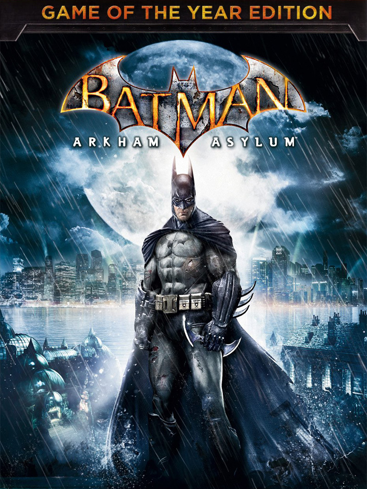

Batman: Arkham Asylum GOTY Edition
Batman: Arkham Asylum GOTY Edition
Details
|  | |
| Playtime | 1h 7m 0s |
| Last Activity | 23/07/2024 23:11:29 |
| Added | 16/09/2024 15:31:47 |
| Modified | 17/05/2025 23:39:55 |
| Completion Status | Played |
| Library | Steam |
| Source | Steam |
| Platform | PC (Windows) |
| Release Date | 26/03/2010 |
| Community Score | 86 |
| Critic Score | 91 |
| User Score | |
| Genre | Adventure Hack and slash/Beat 'em up |
| Developer | Rocksteady Studios |
| Publisher | DC Entertainment Eidos Interactive WB Games |
| Feature | Single Player |
| Links | Steam Epic Official Twitch YouTube Wikia Wikipedia GOG |
| Tag | 3D Vision Action Action-Adventure Adventure Atmospheric Beat 'em up Comic Book Controller Dark Detective Fighting Horror Metroidvania Open World Puzzle Singleplayer Stealth Story Rich Superhero Third Person |
Description
Critically acclaimed Batman: Arkham Asylum returns with a remastered Game of the Year Edition, featuring 4 extra Challenge Maps. The additional Challenge Maps are Crime Alley; Scarecrow Nightmare; Totally Insane and Nocturnal Hunter (both from the Insane Night Map Pack).
- Utilize the unique FreeFlow™ combat system to chain together unlimited combos seamlessly and battle with huge groups of The Joker’s henchmen in brutal melee brawls
- Investigate as Batman, the WORLD’S GREATEST DETECTIVE, by solving intricate puzzles with the help of cutting edge forensic tools including x-ray scanning, fingerprint scans, ‘Amido Black’ spray and a pheromone tracker
- Face off against Gotham’s greatest villains including The Joker, HARLEY QUINN, POISON IVY and KILLER CROC
- Become the Invisible Predator™ with Batman’s fear takedowns and unique vantage point system to move without being seen and hunt enemies
- Choose multiple takedown methods, including swooping from the sky and smashing through walls.
- Explore every inch of Arkham Asylum and roam freely on the infamous island, presented for the first time ever in its gritty and realistic entirety
- Experience what it’s like to be BATMAN using BATARANGS, explosive gel aerosol, The Batclaw, sonar resonator and the line launcher
- Unlock more secrets by completing hidden challenges in the world and develop and customize equipment by earning experience points
- Enjoy complete superhero freedom in the environment with the use of Batman’s grapnel gun to get to any place you can see, jump from any height and glide in any direction